第 11 讲：几何（二）——显式表示：贝塞尔曲线与曲面
从点云、多边形网格到贝塞尔曲线/曲面，掌握显式几何的表示与求值方法
◆ 学完这一讲，你应该能
能说出显式几何的几种常见表示（点云、多边形网格、贝塞尔曲线/曲面等）及其优缺点
能理解并手算 de Casteljau 算法对二次/三次贝塞尔曲线的求值过程
能写出贝塞尔曲线的 Bernstein 多项式形式，并解释控制点、阶数、基函数的关系
能列举贝塞尔曲线的四个关键性质（端点插值、端点切线、仿射变换、凸包）并说明其用途
能解释分段贝塞尔曲线的 C0/C1 连续性条件，并说明为什么工程上常用分段三次贝塞尔
能描述双三次贝塞尔曲面的求值方法（可分离的 1D de Casteljau）
核心结论速记
显式表示直接给出几何形状（点、顶点、参数曲线），隐式表示用方程 F(x,y,z)=0 定义，两者可互相转换但各有适用场景。
点云是最简单的显式表示，适合大规模数据但欠采样区域难以绘制；多边形网格（三角形/四边形）是图形学中最常用的表示。
贝塞尔曲线由控制点定义，de Casteljau 算法用递归线性插值求曲线上任意一点，几何直观且数值稳定。
n 阶贝塞尔曲线的代数形式是 Bernstein 基函数的加权和：b^n(t)=Σ_{j=0}^n b_j B_j^n(t)，其中 B_j^n(t)=C(n,j) t^j (1-t)^{n-j}。
贝塞尔曲线具有端点插值、端点切线与控制点连线一致、仿射变换不变、凸包性质。
高阶贝塞尔曲线难以控制，工程上常用分段三次贝塞尔曲线，并保证 C0（端点重合）或 C1（切线方向与大小连续）连续性。
双三次贝塞尔曲面是 4x4 控制点网格定义的曲面片，求值时可先对每行做 u 方向的 de Casteljau，再对得到的“移动曲线”做 v 方向的 de Casteljau。
B 样条是贝塞尔曲线的超集，具有更强控制能力，但本课程不深入展开。
011. 显式表示：从点云到多边形网格
在图形学中，几何形状的表示大致分为两类：隐式表示（implicit）和显式表示（explicit）。隐式表示不直接给出点，而是用方程 \( F(x,y,z)=0 \) 描述形状（例如球体 \( x^2+y^2+z^2-r^2=0 \)），好处是容易判断点在内、在外还是表面上，但难以直接采样出表面点。显式表示则直接给出几何元素：点、顶点、曲线参数方程等。
本讲聚焦显式表示。最常见的几种：
- 点云（Point Cloud）：一堆 \( (x,y,z) \) 坐标的列表。它是最简单的表示，能表示任意形状，适合大规模数据集（点数量远大于像素数）。缺点是欠采样区域难以绘制出连续表面，通常需要转换成多边形网格。
- 多边形网格（Polygon Mesh）：存储顶点和面（通常是三角形或四边形）。它是图形学中最常用的表示，便于处理、模拟和自适应采样，但数据结构更复杂（需要维护顶点-面-边关系）。
- 贝塞尔曲线/曲面、细分曲面、NURBS 等参数表示，也是显式表示的重要成员。
工程上，点云常用于激光扫描、深度相机重建；多边形网格则是实时渲染的绝对主力。理解这些表示的取舍，有助于你在引擎里选择正确的资产格式和处理流程。
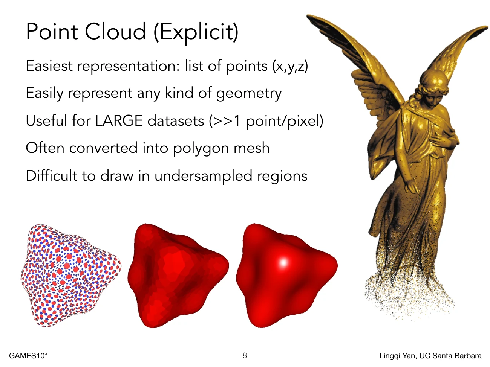
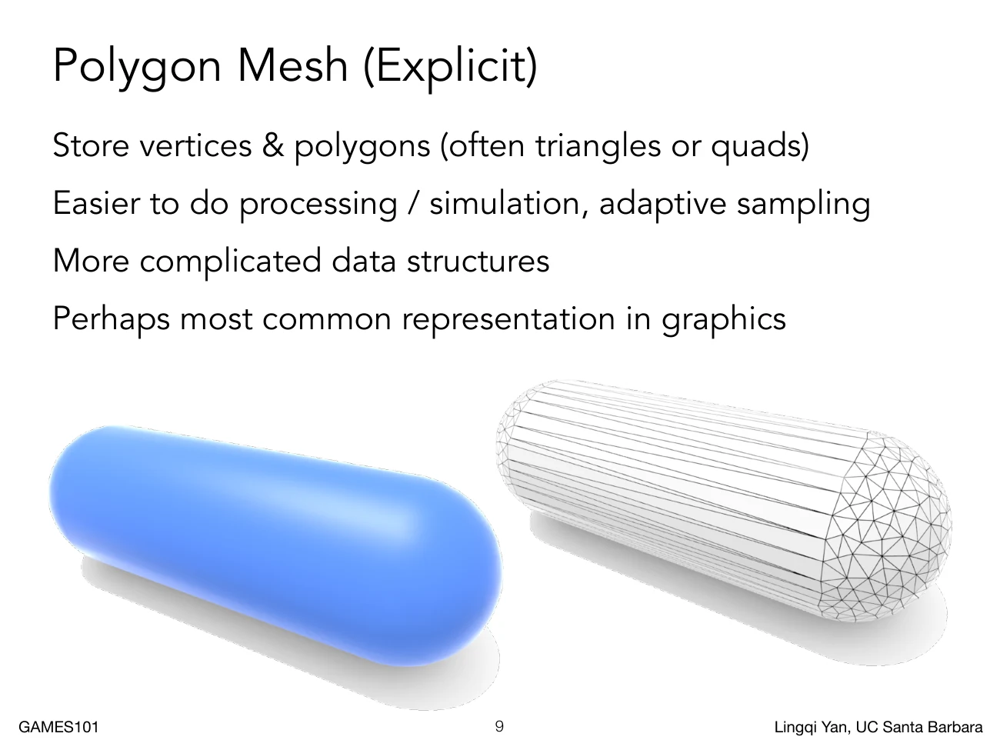
常见坑
点云直接渲染时出现空洞或噪点 → 点密度不足或点云未做滤波 → 检查采样密度，必要时转为网格或使用点云重建算法。
多边形网格出现裂缝或非流形边 → 顶点未正确共享或面片朝向不一致 → 检查网格的拓扑一致性（如使用网格修复工具）。
UE / Unity 落地
UE：静态网格体（Static Mesh）本质就是多边形网格；点云可通过插件（如 LiDAR Point Cloud 插件）导入并渲染。
Unity：Mesh Filter + Mesh Renderer 使用多边形网格；点云可用 Particle System 或 VFX Graph 渲染。
022. 贝塞尔曲线：用控制点“拉”出曲线
贝塞尔曲线（Bézier curve）是计算机图形学中最著名的参数曲线，由法国工程师 Pierre Bézier 和 Paul de Casteljau 独立提出。它的核心思想是：给定一组控制点（control points），通过递归线性插值生成一条光滑曲线。
以三次贝塞尔曲线为例，输入四个控制点 \( \mathbf{b}_0, \mathbf{b}_1, \mathbf{b}_2, \mathbf{b}_3 \)。曲线起点是 \( \mathbf{b}_0 \)，终点是 \( \mathbf{b}_3 \)，而 \( \mathbf{b}_1, \mathbf{b}_2 \) 控制曲线的弯曲程度。曲线在起点处的切线方向沿 \( \mathbf{b}_1 - \mathbf{b}_0 \)，在终点处的切线方向沿 \( \mathbf{b}_3 - \mathbf{b}_2 \)。
贝塞尔曲线在工程中无处不在：字体轮廓（如 Baskerville 字体用分段三次贝塞尔表示）、相机路径、动画曲线（Maya 的动画曲线就是贝塞尔曲线）、Illustrator 的钢笔工具等。
为什么不用高阶贝塞尔？高阶曲线虽然能表示更复杂的形状，但控制点对曲线的影响变得非常全局，微调一个点会牵动整条曲线，极难控制。因此实际中更常用分段三次贝塞尔曲线（piecewise cubic Bézier），把多段低阶曲线拼接起来。
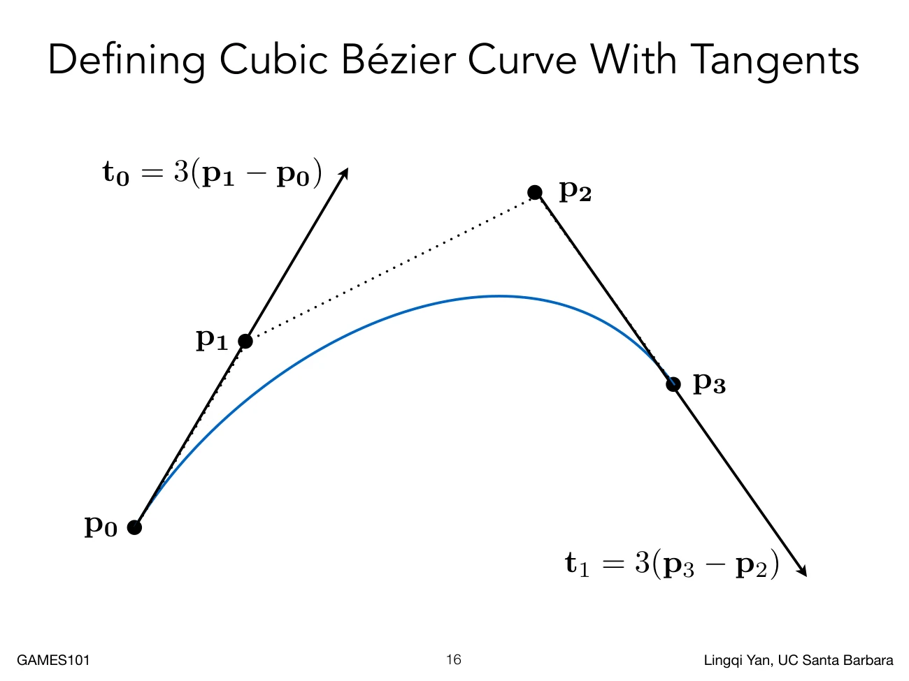
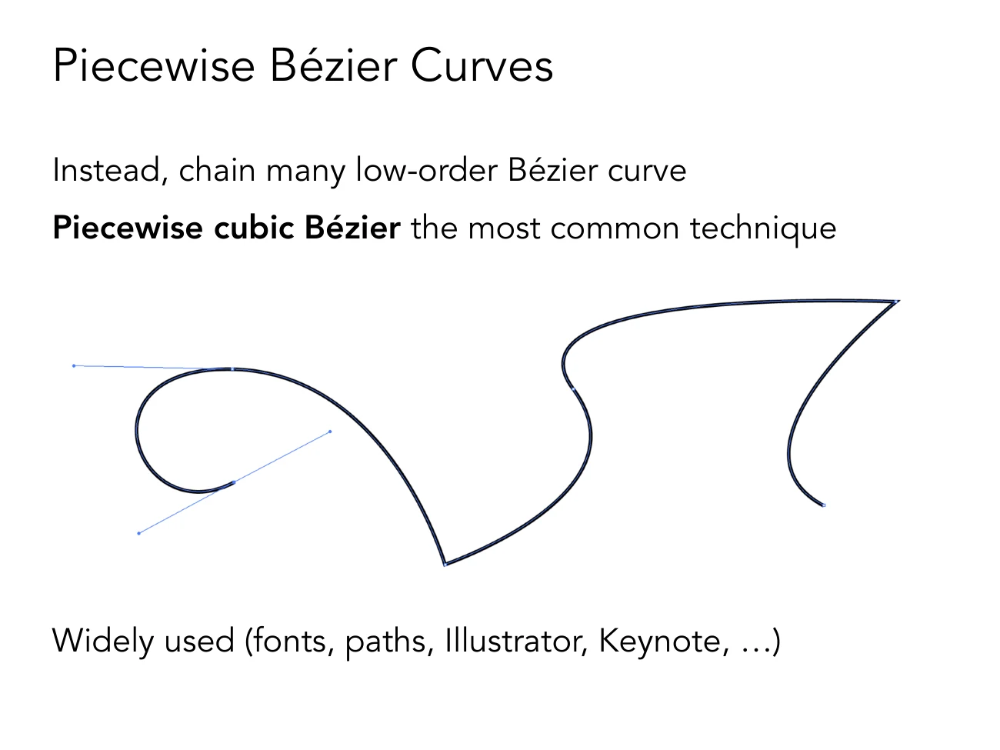
常见坑
曲线不经过中间控制点 → 误以为控制点都在曲线上 → 贝塞尔曲线只插值首尾端点，中间点仅“吸引”曲线。
调整控制点后曲线形状变化不符合预期 → 高阶贝塞尔全局影响 → 改用分段三次贝塞尔，局部调整。
UE / Unity 落地
UE：动画蓝图中的曲线资产（Curve Asset）和 Sequencer 中的动画曲线底层常用贝塞尔插值；样条组件（Spline Component）支持贝塞尔控制点。
Unity：Animation Curves 在 Inspector 中可编辑，底层是贝塞尔或 Hermite 插值；Line Renderer 可配合贝塞尔脚本生成曲线。
033. de Casteljau 算法：递归线性插值求曲线上的点
给定参数 \( t \in [0,1] \)，如何求贝塞尔曲线上对应的点？de Casteljau 算法给出了一个几何直观、数值稳定的递归方法。
以二次贝塞尔曲线（三个控制点 \( \mathbf{b}_0, \mathbf{b}_1, \mathbf{b}_2 \)）为例：
- 在边 \( \mathbf{b}_0\mathbf{b}_1 \) 上做线性插值：\( \mathbf{b}_0^1 = (1-t)\mathbf{b}_0 + t\mathbf{b}_1 \)；
- 在边 \( \mathbf{b}_1\mathbf{b}_2 \) 上做线性插值：\( \mathbf{b}_1^1 = (1-t)\mathbf{b}_1 + t\mathbf{b}_2 \)；
- 再对 \( \mathbf{b}_0^1, \mathbf{b}_1^1 \) 做线性插值：\( \mathbf{b}_0^2 = (1-t)\mathbf{b}_0^1 + t\mathbf{b}_1^1 \)。
最终得到的 \( \mathbf{b}_0^2 \) 就是曲线上参数 \( t \) 对应的点。对每个 \( t \in [0,1] \) 重复上述过程，就能画出整条曲线。
三次贝塞尔曲线同理：四层控制点，经过三轮线性插值得到最终点。这个过程可以画成一个“金字塔”形的系数图：每向右一步乘以 \( t \)，每向左一步乘以 \( (1-t) \)。
de Casteljau 算法的优点是只用加法和乘法，不涉及高次幂，数值稳定性好；缺点是每次求点都要递归计算，效率不如直接代入代数公式。
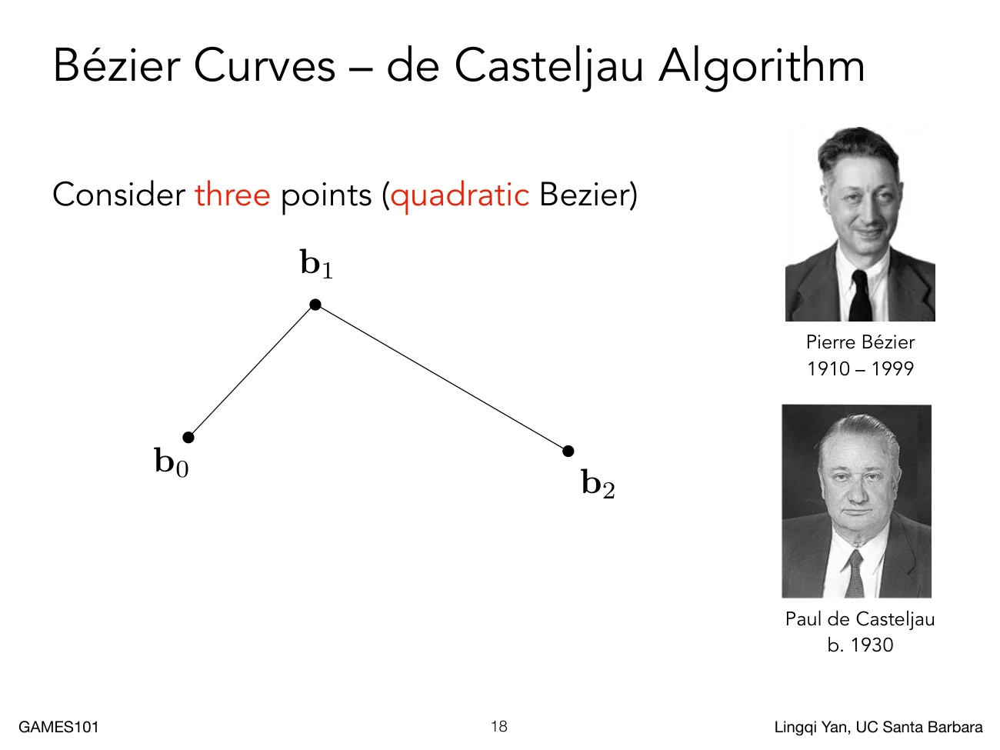
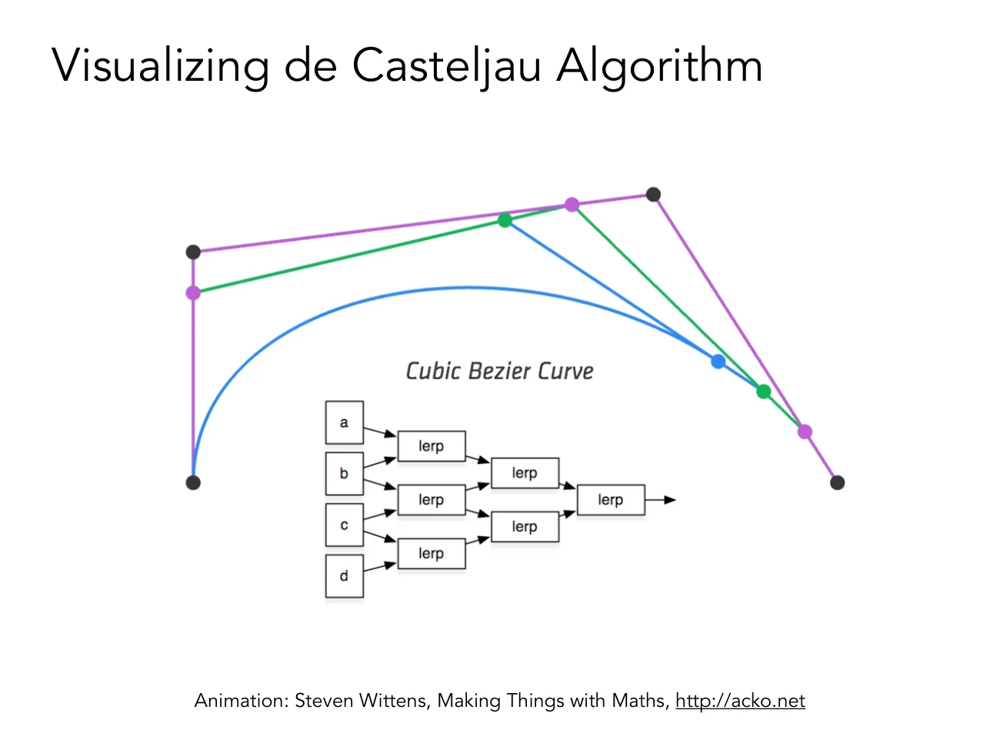
常见坑
插值方向搞反 → 把 \( (1-t) \) 和 \( t \) 写反 → 检查公式：靠近起点的点权重更大的是 \( (1-t) \)。
对每个 \( t \) 都重新计算整个金字塔 → 效率低 → 实际渲染时可预计算基函数或使用代数形式。
UE / Unity 落地
UE：Spline Component 的贝塞尔控制点求值内部使用类似 de Casteljau 的递归插值。
Unity：Spline 包（Unity Splines）提供贝塞尔曲线求值，底层也是 de Casteljau 或等价算法。
二次贝塞尔曲线的 de Casteljau 求值伪代码（cpp）
Point2D deCasteljauQuadratic(Point2D b0, Point2D b1, Point2D b2, float t) {
Point2D b01 = (1 - t) * b0 + t * b1;
Point2D b12 = (1 - t) * b1 + t * b2;
return (1 - t) * b01 + t * b12;
}044. 贝塞尔曲线的代数形式：Bernstein 多项式
de Casteljau 算法是几何的，但我们可以把它展开成代数形式。对于 \( n \) 阶贝塞尔曲线，有：
\[ \mathbf{b}^n(t) = \sum_{j=0}^{n} \mathbf{b}_j B_j^n(t) \]
其中 \( \mathbf{b}_j \) 是控制点（向量），\( B_j^n(t) \) 是 Bernstein 多项式（标量）：
\[ B_j^n(t) = \binom{n}{j} t^j (1-t)^{n-j} \]
这里 \( \binom{n}{j} = \frac{n!}{j!(n-j)!} \) 是二项式系数。
以三次贝塞尔曲线（\( n=3 \)）为例，展开得到：
\[ \mathbf{b}^3(t) = (1-t)^3 \mathbf{b}_0 + 3t(1-t)^2 \mathbf{b}_1 + 3t^2(1-t) \mathbf{b}_2 + t^3 \mathbf{b}_3 \]
可以验证，de Casteljau 算法的金字塔系数正好对应这些 Bernstein 基函数的系数。
Bernstein 多项式有几个重要性质：非负性、单位分解（\( \sum_j B_j^n(t) = 1 \)）、对称性等。这些性质保证了贝塞尔曲线的凸包性和仿射不变性。
代数形式的好处是求值快（直接代入多项式），也便于求导和做数值分析；缺点是当 \( n \) 较大时，高次幂可能导致数值不稳定。
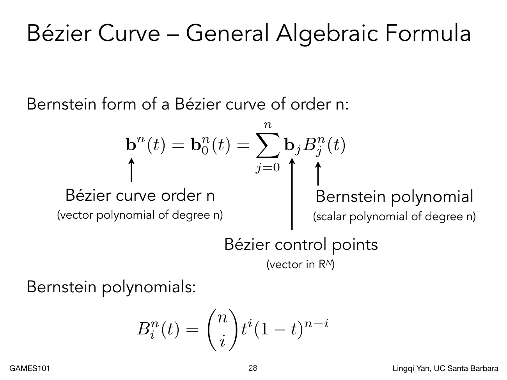
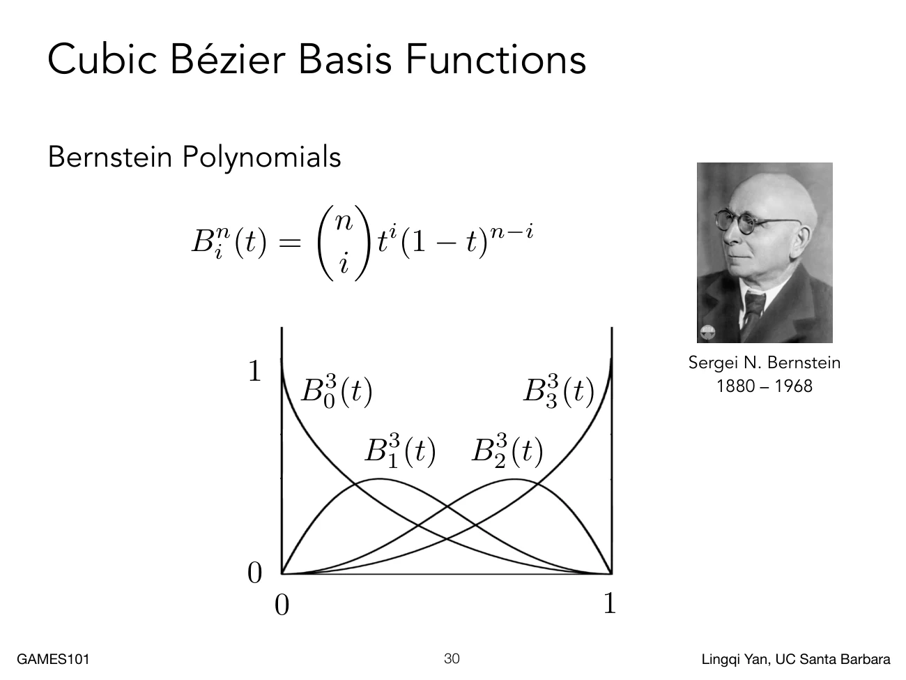
常见坑
Bernstein 基函数写错指数 → 把 \( t^j (1-t)^{n-j} \) 写成 \( t^{n-j} (1-t)^j \) → 检查 \( j \) 对应 \( t \) 的幂次。
忘记二项式系数 → 曲线形状不对 → 确保 \( B_j^n(t) \) 前面有 \( \binom{n}{j} \)。
UE / Unity 落地
UE：材质编辑器中的曲线节点（Curve Atlas）可用 Bernstein 基函数自定义插值。
Unity：Shader 中可用 Bernstein 多项式实现贝塞尔曲线求值（如 \( t \) 的幂次展开）。
三次贝塞尔曲线的 Bernstein 形式求值（HLSL）（hlsl）
float3 BezierCubic(float3 b0, float3 b1, float3 b2, float3 b3, float t) {
float u = 1.0 - t;
float b0w = u * u * u;
float b1w = 3.0 * t * u * u;
float b2w = 3.0 * t * t * u;
float b3w = t * t * t;
return b0w * b0 + b1w * b1 + b2w * b2 + b3w * b3;
}055. 贝塞尔曲线的关键性质与分段连续性
贝塞尔曲线有四个非常重要的性质，它们决定了它在工程中的用法：
- 端点插值：曲线一定经过第一个和最后一个控制点。三次贝塞尔：\( \mathbf{b}(0)=\mathbf{b}_0 \)，\( \mathbf{b}(1)=\mathbf{b}_3 \)。
- 端点切线与控制点连线一致：三次贝塞尔在起点处的切线方向为 \( \mathbf{b}_1 - \mathbf{b}_0 \)，在终点处为 \( \mathbf{b}_3 - \mathbf{b}_2 \)。这意味着你可以通过调整第二个/第三个控制点来精确控制曲线在端点的走向。
- 仿射变换不变性：对曲线做仿射变换（平移、旋转、缩放、剪切）等价于对控制点做同样的变换。这使得贝塞尔曲线在渲染管线中非常方便。
- 凸包性质：曲线始终位于控制点的凸包内。这为碰撞检测、裁剪等提供了快速保守估计。
由于高阶贝塞尔难以控制，实际中常用分段贝塞尔曲线：把多段低阶曲线拼接起来。拼接时需要保证连续性：
- C0 连续：前一段的终点等于后一段的起点，即 \( \mathbf{a}_n = \mathbf{b}_0 \)。曲线在连接处不断开。
- C1 连续：在 C0 基础上，还要求一阶导数连续，即 \( \mathbf{a}_n' = \mathbf{b}_0' \)。对于三次贝塞尔，这等价于 \( \mathbf{a}_{n-1}, \mathbf{a}_n, \mathbf{b}_1 \) 三点共线且 \( \mathbf{a}_n \) 是线段中点（当参数间隔相等时）。
工程上，字体、路径、动画曲线几乎都使用分段三次贝塞尔，并保证至少 C0，通常 C1。
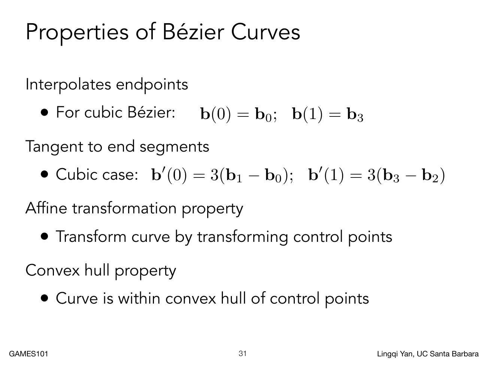
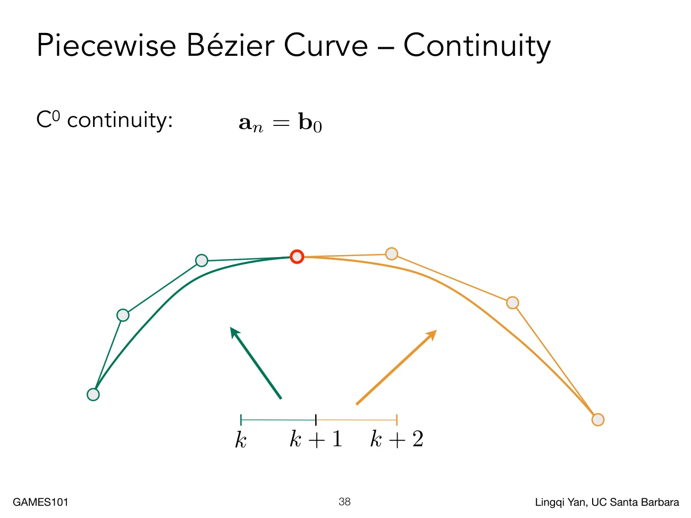
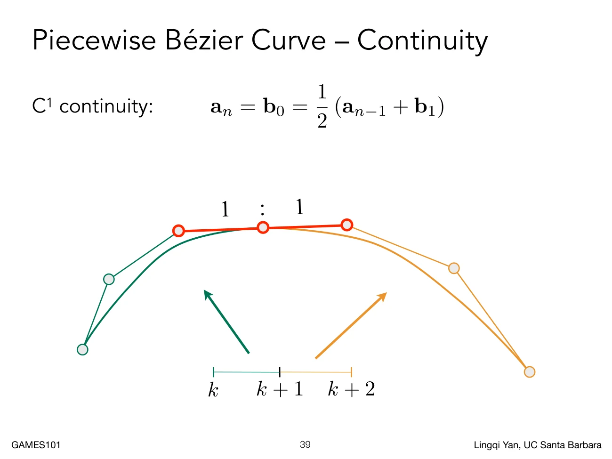
常见坑
拼接处出现尖角 → 只保证了 C0 连续，未保证切线方向一致 → 调整控制点使连接处切线共线。
凸包性质被误用为“曲线在控制点围成的多边形内” → 凸包是控制点的最小凸集，不是任意多边形 → 理解凸包定义。
UE / Unity 落地
UE：Spline Component 支持设置每个控制点的切线，拼接时需手动保证 C1（或使用样条类型如 Hermite）。
Unity：Spline 包提供“Tangent Mode”设置，可自动计算 C1 连续切线。
066. 双三次贝塞尔曲面：可分离的 1D 求值
把贝塞尔曲线从一维参数推广到二维参数，就得到贝塞尔曲面。最常用的是双三次贝塞尔曲面片（bicubic Bézier surface patch）：输入是 4x4 控制点网格，输出是参数 \( (u,v) \in [0,1]^2 \) 定义的曲面片。
求值方法非常巧妙：可分离的 1D de Casteljau 算法。
- 固定参数 \( u \)，对控制点网格的每一行（4 条贝塞尔曲线）分别用 de Casteljau 算法求 \( u \) 处的点。这样得到 4 个新点，它们构成一条“移动曲线”的控制点。
- 再对这条移动曲线，用 de Casteljau 算法求参数 \( v \) 处的点。
最终得到的点就是曲面在 \( (u,v) \) 处的位置。这个过程可以理解为：先在 \( u \) 方向做一次曲线求值，再在 \( v \) 方向做一次。
双三次贝塞尔曲面片在工程中用于汽车车身、飞机外壳、动画角色曲面等。Utah Teapot 就是贝塞尔曲面的经典例子。
注意：贝塞尔曲面同样有凸包性质，且对控制点做仿射变换等价于对曲面做仿射变换。
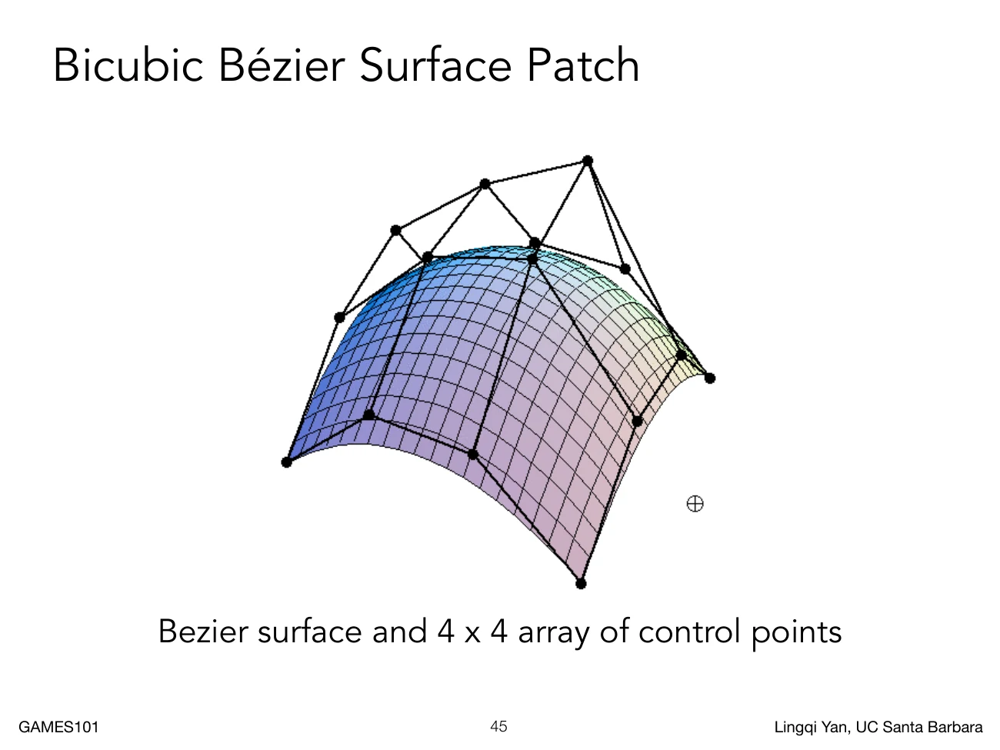
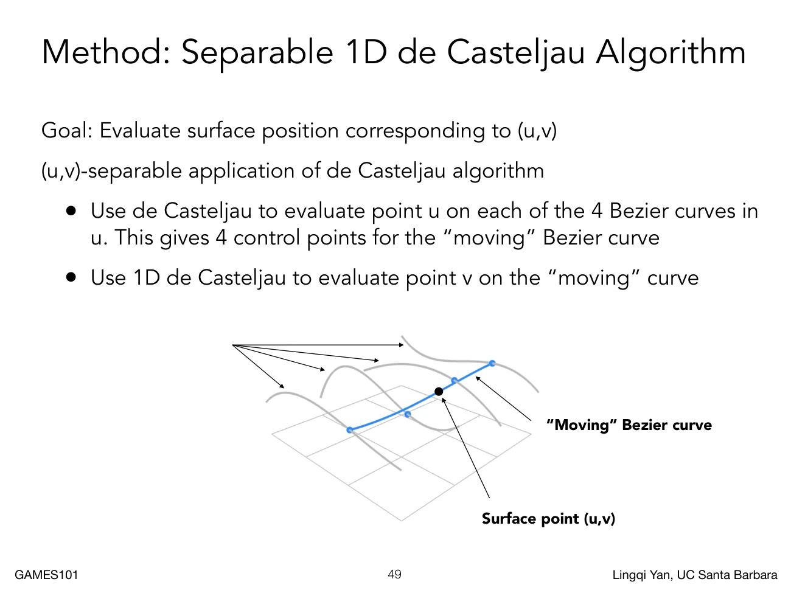
常见坑
把 \( u \) 和 \( v \) 方向搞反 → 曲面形状不对 → 约定：先对每行做 u 方向，再对列做 v 方向，或反之，但需一致。
控制点网格不是 4x4 却按双三次处理 → 越界或形状错误 → 确认输入是 4x4 控制点。
UE / Unity 落地
UE：Landscape 或 Procedural Mesh 可用贝塞尔曲面生成地形或曲面片；材质中可用 Custom Node 实现曲面求值。
Unity：ProBuilder 或 Mesh 生成脚本可用贝塞尔曲面片创建复杂曲面。
双三次贝塞尔曲面求值伪代码（可分离 de Casteljau）（cpp）
Point3D BezierSurface(Point3D P[4][4], float u, float v) {
Point3D Q[4];
for (int i = 0; i < 4; ++i) {
Q[i] = deCasteljauCubic(P[i][0], P[i][1], P[i][2], P[i][3], u);
}
return deCasteljauCubic(Q[0], Q[1], Q[2], Q[3], v);
}引擎对照表
| 概念 / 效果 | Unreal Engine | Unity |
|---|---|---|
贝塞尔曲线 | Spline Component 支持贝塞尔控制点；动画曲线资产 | Spline 包提供贝塞尔曲线；Animation Curves |
多边形网格 | Static Mesh / Skeletal Mesh | Mesh Filter + Mesh Renderer |
点云 | LiDAR Point Cloud 插件 | VFX Graph / Particle System |
分段连续性 | Spline 的 Tangent Mode 可设置 C1 连续 | Spline 的 Tangent Mode 自动计算 |
贝塞尔曲面 | Procedural Mesh / Custom Node 实现 | Mesh 生成脚本 / ProBuilder |
术语双语表
| English | 中文 | 说明 |
|---|---|---|
| Explicit Representation | 显式表示 | 直接给出几何元素（点、顶点、参数方程）的表示方式。 |
| Implicit Representation | 隐式表示 | 用方程 F(x,y,z)=0 定义形状，不直接给出点。 |
| Point Cloud | 点云 | 大量离散点的集合，最简单的显式表示。 |
| Polygon Mesh | 多边形网格 | 顶点和面片组成的网格，实时渲染最常用。 |
| Bézier Curve | 贝塞尔曲线 | 由控制点定义的光滑参数曲线。 |
| de Casteljau Algorithm | de Casteljau 算法 | 递归线性插值求贝塞尔曲线上点的方法。 |
| Bernstein Polynomial | Bernstein 多项式 | 贝塞尔曲线代数形式中的基函数。 |
| Convex Hull | 凸包 | 包含一组点的最小凸集；贝塞尔曲线位于控制点凸包内。 |
| Bicubic Bézier Surface | 双三次贝塞尔曲面 | 由 4x4 控制点网格定义的曲面片。 |
| B-spline | B 样条 | 贝塞尔曲线的推广，控制能力更强，本课程不深入。 |
课后练习
01 简述点云和多边形网格作为显式表示各自的优缺点。
查看答案
提示：
从表示能力、数据规模、绘制难度、处理便利性角度考虑。
点云：优点是最简单、能表示任意形状、适合大规模数据；缺点是欠采样区域难以绘制连续表面，通常需转为网格。多边形网格：优点是便于处理、模拟和自适应采样，是图形学最常用表示；缺点是数据结构复杂，需要维护拓扑关系。
02 给定二次贝塞尔曲线控制点 \( \mathbf{b}_0=(0,0) \), \( \mathbf{b}_1=(1,1) \), \( \mathbf{b}_2=(2,0) \)，用 de Casteljau 算法求 \( t=0.5 \) 处的点。
查看答案
提示：
先对两条边做线性插值，再对结果做线性插值。
\( \mathbf{b}_0^1 = 0.5\mathbf{b}_0 + 0.5\mathbf{b}_1 = (0.5, 0.5) \)；\( \mathbf{b}_1^1 = 0.5\mathbf{b}_1 + 0.5\mathbf{b}_2 = (1.5, 0.5) \)；\( \mathbf{b}_0^2 = 0.5\mathbf{b}_0^1 + 0.5\mathbf{b}_1^1 = (1.0, 0.5) \)。所以 \( t=0.5 \) 处点为 \( (1, 0.5) \)。
03 写出三次贝塞尔曲线的 Bernstein 形式，并说明每个基函数在 \( t=0 \) 和 \( t=1 \) 处的取值。
查看答案
提示：
利用 \( B_j^n(t) = \binom{n}{j} t^j (1-t)^{n-j} \)。
\( \mathbf{b}^3(t) = (1-t)^3 \mathbf{b}_0 + 3t(1-t)^2 \mathbf{b}_1 + 3t^2(1-t) \mathbf{b}_2 + t^3 \mathbf{b}_3 \)。在 \( t=0 \) 处，只有 \( B_0^3(0)=1 \)，其余为 0；在 \( t=1 \) 处，只有 \( B_3^3(1)=1 \)，其余为 0。这保证了端点插值性质。
04 解释分段贝塞尔曲线的 C0 和 C1 连续性条件，并说明为什么工程中常用分段三次贝塞尔而不是高阶贝塞尔。
查看答案
提示：
从控制点约束和曲线可控性角度回答。
C0 连续：前一段终点等于后一段起点（\( \mathbf{a}_n = \mathbf{b}_0 \)），曲线不断开。C1 连续：在 C0 基础上，一阶导数连续（\( \mathbf{a}_n' = \mathbf{b}_0' \)），对于三次贝塞尔，要求连接处三个控制点共线且中点重合。高阶贝塞尔控制点对曲线影响全局，微调一个点会牵动整条曲线，难以控制；分段三次贝塞尔可以局部调整，且数值稳定，因此工程上更常用。
05 在 UE 或 Unity 中，如何用贝塞尔曲线实现一个相机沿路径飞行的效果？简述步骤。
查看答案
提示：
考虑样条组件、控制点设置、参数采样。
在 UE 中：创建 Spline Component，添加控制点并设置切线（保证 C1 连续），在 Tick 中根据时间参数 \( t \) 调用 Spline 的 GetLocationAtTime 或 GetLocationAtDistanceAlongSpline 获取位置，设置相机位置和朝向。在 Unity 中：使用 Spline 包创建样条，添加控制点，通过 SplineContainer 的 Evaluate 方法获取位置和切线，驱动相机。